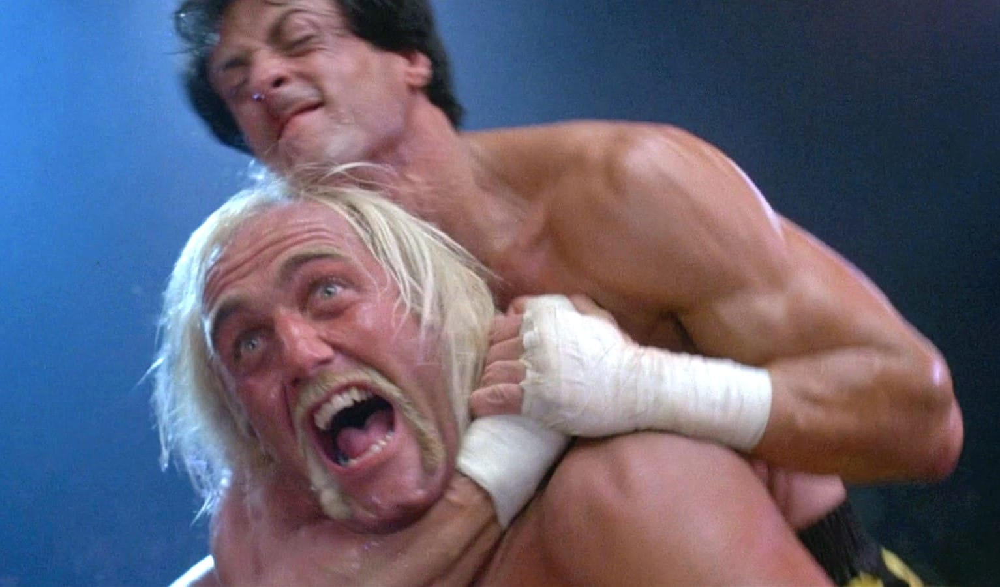

Hulk Hogan, alias Terry Eugene Bollea, est né le 11 août 1953 à Augusta aux Etats-Unis. Il est catcheur professionnel, acteur et musicien. Il rencontre les catcheurs Jerry et Jack Brisco en 1976, et c'est à ce moment qu'il commence le catch. Il intègre l'école de la Championship Wrestling from Florida, et sa carrière professionnelle débute en 1977. Il catche dans plusieurs fédérations aux Etats-unis comme la WWF ou la WWE, mais aussi au Japon avec la NJPW. Le point culminant de sa carrière est la Hulkmania de 1983 à 1993. C'est à ce moment là qu'il est le plus populaire. Il joue dans plusieurs films comme Rocky III en 1982, et en 2005 il participe à une émission de téléréalité sur sa propre vie. En 2015 un scandale éclate après qu'une sextape a été révélée, et dans laquelle on l'entend tenir des propos racistes. Il est aujourd'hui ambassadeur à la WWE.
- 1953 Naissance à Augusta aux Etats-Unis
- 1976 Intègre une école de catch
- 1977 Début de sa carrière professionnelle
- 1982 Joue un rôle dans Rocky III
- 1980-1983Fédération de catch au Japon
- 1984 Son premier titre mondial contre Iron Sheik
- 1983-1993 La Hulkmania
- 1996-1999 New World Order
- 2002-2006 Retour à la WWF
- 2010-2013 Total Action Nonstop Wrestling
- A partir de 2014 Evolue à la WWE
Ici avec son manager Freddie Blassie en 1980
Athlète ou bête de scène ? Sûrement les deux...
En 1982, Il joue le rôle de Thunderlips dans Rocky III.
Sa victoire en 1987 contre un des principaux rivaux de sa carrière, le français André the Giant

La Hulkmania au milieu des années 80